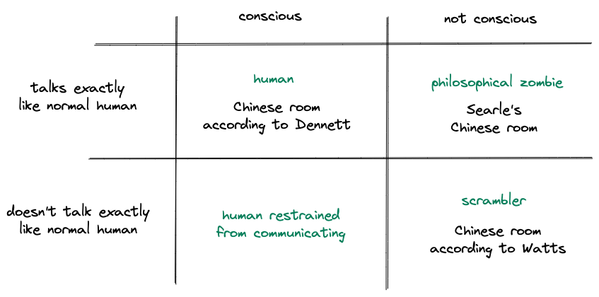
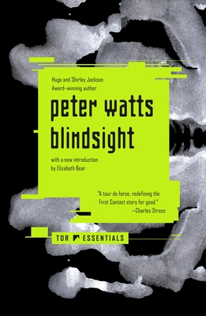

Blindsight, by Watts
Saturday December 24, 2022
Thanks to an invite, I finally read Blindsight, by Peter Watts. It's good. The central what-if is about whether consciousness is necessary (or even helpful) for intelligent behavior.
In this diagram, every quadrant exhibits intelligent behavior:

I think Watts uses the term Chinese Room to mean something different from what Searle (and even Dennett) mean. Searle's Chinese Room is a kind of philosophical zombie, with linguistic behavior indistinguishable from that of a conscious human, but no consciousness. Dennett says the Chinese Room is conscious, which is the kind of nonsense that will get you fired from Google. Watt's aliens ("scramblers" and related systems) are empirically distinguishable from humans in their use of language, and he says they're a Chinese Room example because of this. That's a different meaning for the term.
We usually imagine intelligent aliens as being conscious, like humans, and Watts's idea is to imagine aliens that are intelligent but not conscious, like evolved computers, in the same category where I would put all AI. Could this happen?
If nothing else, the book invites thought on how we view consciousness. We generally accept that other humans are conscious, not philosophical zombies. If we met an intelligent alien, would we so easily assume its consciousness? Would this be important to how we interact with it? How do we think of animal consciousness and what this means ethically? Is it possible for AI to be conscious?
Definitely interesting enough that I'll read Echopraxia too.

"After four thousand years we can’t even prove that reality exists beyond the mind of the first-person dreamer." (page 52)